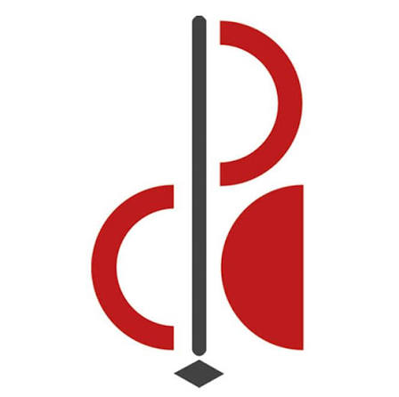

Hardware-Software Actuation Systems: Designed specialized electronic hardware interfaces, custom sensor circuits, and real-time software for physical instrument actuation, sensor augmentation, and interactive acoustic environments.
Augmented Instruments & Haptic Systems: Designed and built "The Feed-Guitar" (augmented electric guitar with bridge actuation showcased at Auditorium Parco della Musica) and integrated optical/capacitive performance sensors on classical guitars via Make Controller and Max/MSP.
Interactive Installations & Scenography: Developed interactive physical computing installations, including capacitive-sensor audio-visual art reacting to touch and an interactive string scenography triggered by dancer movements and MIDI controllers.
Algorithmic Composition & Research: Published research on real-time execution of Iannis Xenakis’ Analogique B using Markov Models with dynamic entropy-based probability matrices.
Psychoacoustics & Signal Processing: Conducted research into human perception of musicality (harmony, timbre, rhythm) and built custom algorithms to bridge acoustic performance with low-latency digital signal processing.